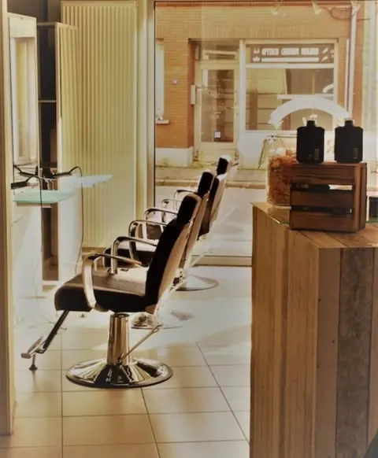
Grobbendonk
Astridplein 38/1, 2280 Grobbendonk · sinds 2007
4,6★★★★★ 49 reviews| Maandag | 09:00 - 16:00 |
| Dinsdag | Gesloten |
| Woensdag | 09:00 - 17:00 |
| Donderdag | 11:00 - 20:00 |
| Vrijdag | 09:00 - 18:00 |
| Zaterdag | 08:00 - 16:00 |
| Zondag | Gesloten |
Bij Haircuts & Barber kan je met het hele gezin terecht. Dames voor balayage, kleur en keratine, heren voor een strakke snit en hun baard, kinderen voor een vlotte knipbeurt. Met vaste menu's waarin alles inbegrepen is.
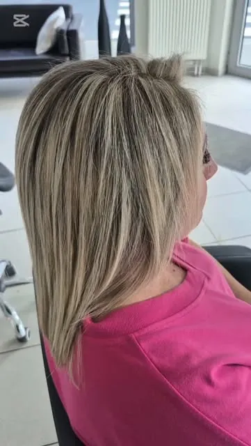
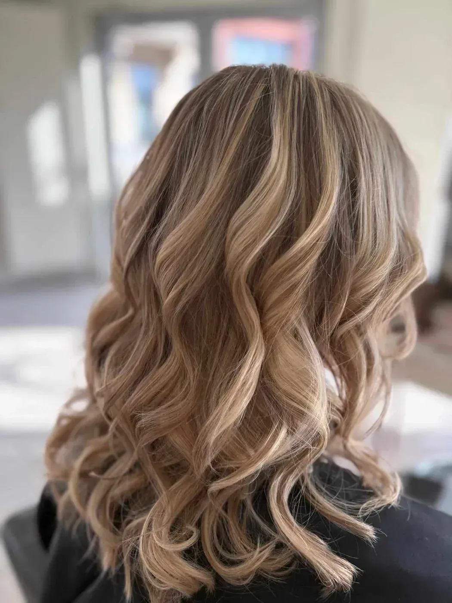
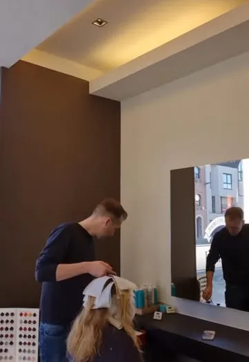
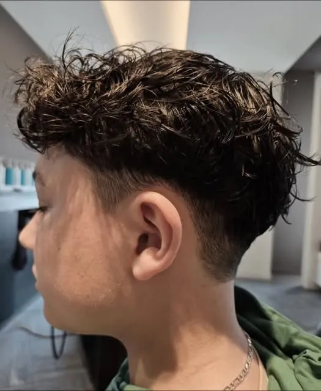
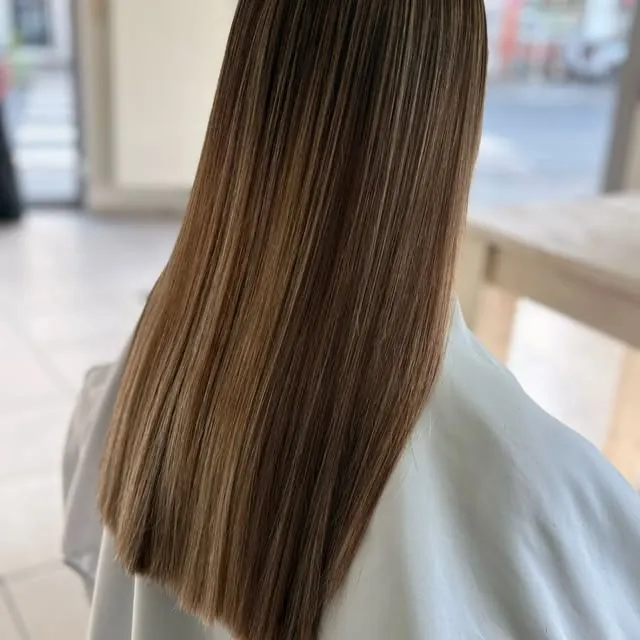
Balayage, kleur, keratine en opsteken. Natuurlijk of net iets uitgesprokener, door kleurspecialisten.
Met schaar of tondeuse, en je baard getrimd en mooi afgelijnd met Tailor's Grooming.
Voor jongens en meisjes, met prijzen per leeftijd. Studenten vanaf 13 jaar krijgen 15 procent korting.
Kies wat je wil laten doen. Shampoo, verzorging en afwerkingsproduct zijn altijd inbegrepen, dus de prijs die je hier ziet is de prijs aan de kassa.
Alles inbegrepen. Betalen kan cash of met Payconiq.
Boek online in Grobbendonk Bel het salon in MortselWarme blondtinten, zachte highlights of je eigen kleur wat opfrissen. Er wordt gewerkt met Artistique voor de kleur en Moroccanoil voor de verzorging.
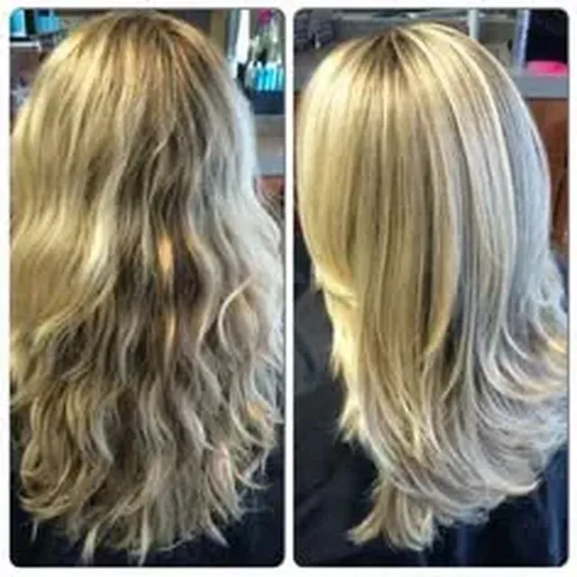
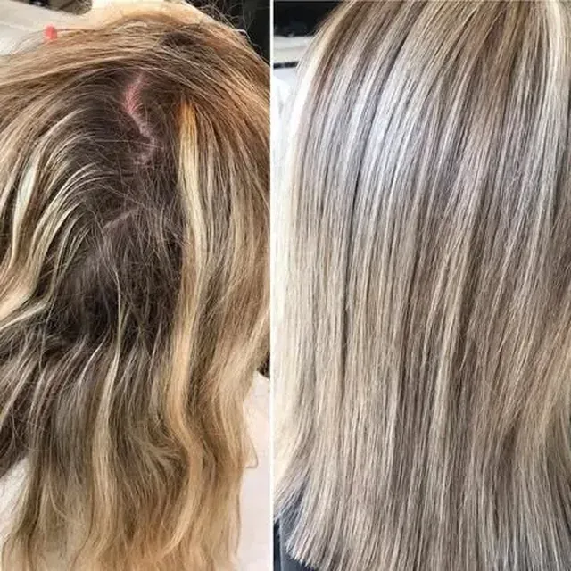
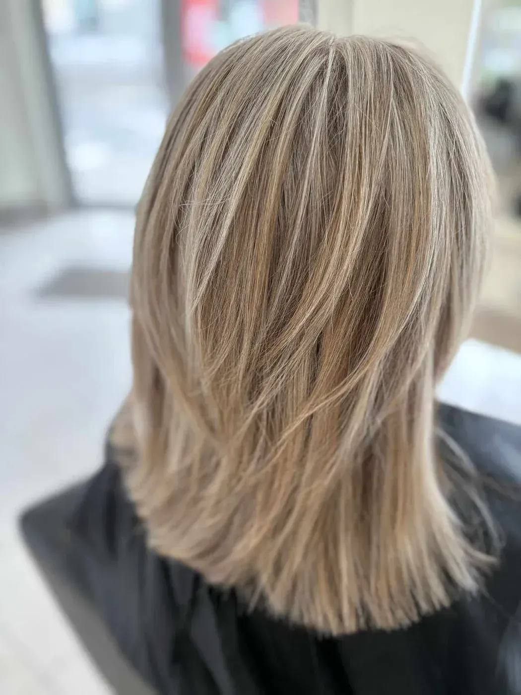
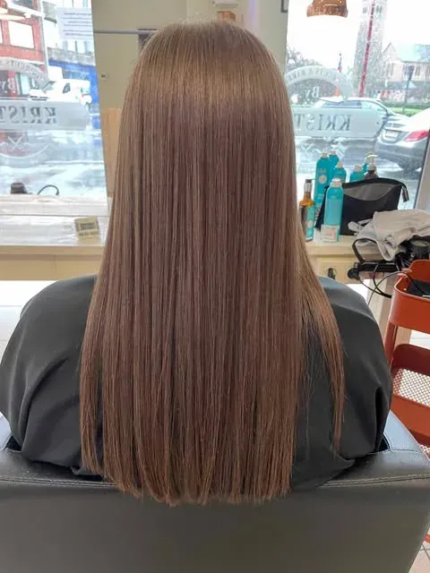

Na een keratinebehandeling is je haar glad en glanzend, zonder dat je er elke ochtend mee bezig bent.
Wat begon met één kapper, groeide uit tot twee salons. De aanpak bleef dezelfde: luisteren, eerlijk advies en zorg voor elke klant.
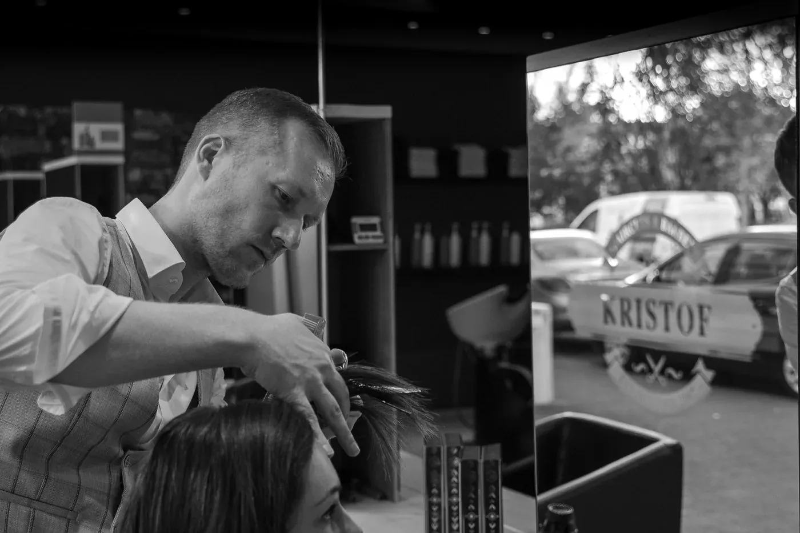
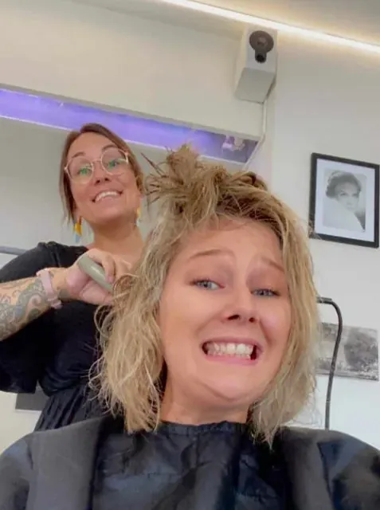
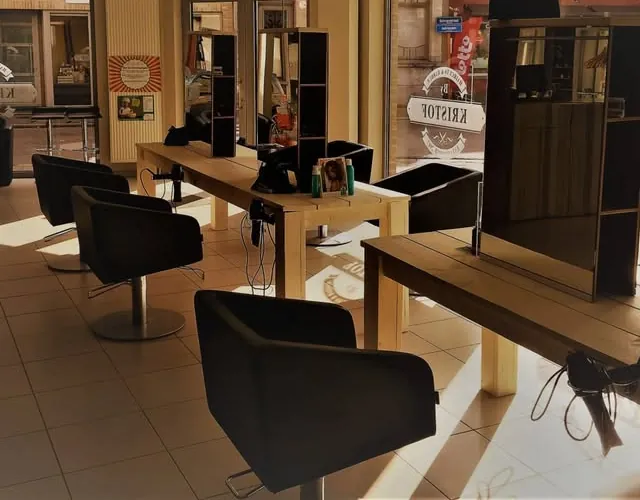
Je bent altijd welkom op afspraak. Elk salon heeft zijn eigen agenda.

Astridplein 38/1, 2280 Grobbendonk · sinds 2007
4,6★★★★★ 49 reviews| Maandag | 09:00 - 16:00 |
| Dinsdag | Gesloten |
| Woensdag | 09:00 - 17:00 |
| Donderdag | 11:00 - 20:00 |
| Vrijdag | 09:00 - 18:00 |
| Zaterdag | 08:00 - 16:00 |
| Zondag | Gesloten |
Edegemsestraat 78, 2640 Mortsel · sinds 2018
4,8★★★★★ 32 reviews“Super leuke rustige sfeer. Kristof weet wat hij doet en geeft ook tips als je zelf wat onzeker bent.”Loïc Verbeeck, op Google
“Al 10 jaar zeer tevreden van deze kapper in Grobbendonk. Het ritje vanuit Pulle meer dan waard.”
Evi MattheusGrobbendonk“Super leuke rustige sfeer. Kristof weet wat hij doet en geeft ook tips als je zelf wat onzeker bent.”
Loïc VerbeeckMortsel“Ik moest last minute mijn afspraak afzeggen, maar ze hebben deze zonder problemen voor mij verzet. Het onthaal was vriendelijk en de knipbeurt was precies wat ik wou.”
JelleGrobbendonk“Samen met mijn dochter speciaal vanuit Grobbendonk naar hier gereden. Allebei gekleurd en het resultaat is prachtig.”
Annemie De CnodderMortsel“Vriendelijk onthaal en het was ook een gezellige en nette sfeer. Is nu mijn vaste kapper geworden.”
TelmanMortsel“Kristof is een goeie kapper. Ook altijd in voor een babbeltje en om tips te geven.”
Kenny TielemansMortselJa, er wordt altijd op afspraak gewerkt. In Grobbendonk kan dat online of via 014 50 08 01, in Mortsel via 03 291 29 89 of Instagram.
Shampoo, verzorging en afwerkingsproduct zijn altijd inbegrepen. Je betaalt dus de prijs van het menu, zonder extra's achteraf.
Ja, studenten vanaf 13 jaar krijgen 15 procent korting.
Cash of met Payconiq.
Reken op 3 tot 6 maanden glad haar, afhankelijk van je haar en hoe vaak je het wast.
Ik maakte deze demo voor jullie om te tonen wat er kan. Na een kort gesprek maak ik er iets veel persoonlijkers van, helemaal naar jullie wens.
Vrijblijvend. Ik kom langs of we bellen.
Op maat, op jullie eigen domein.
Geen voorschot. Jullie betalen pas als alles klaar is.
Hosting, domeinnaam en kleine wijzigingen, zoals nieuwe openingsuren.
Omdat een voorbeeld meer zegt dan een mail. Zo zien jullie meteen wat er kan, en het kost jullie niets.
Nee. Het gesprek is vrijblijvend. Vinden jullie het niks, dan is het daarmee gedaan.
Na ons gesprek staat jullie site binnen 10 tot 14 dagen online.
Zeker. Jullie domeinnaam kan gewoon blijven, de nieuwe site komt in de plaats van de oude.
Nee, dat doe ik op basis van ons gesprek. Eigen foto's zijn mooi meegenomen, maar niet nodig om te starten.